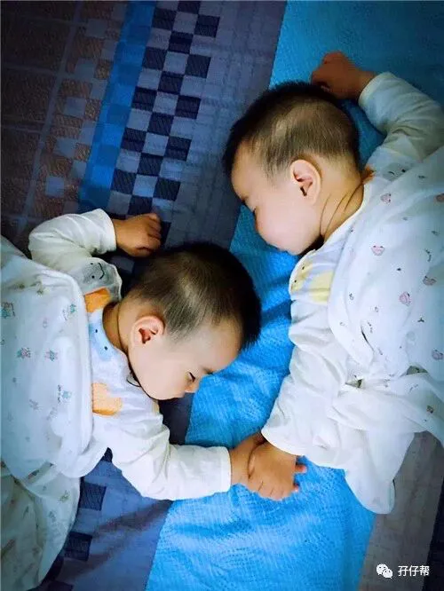

01
听说我的男神三胎喜得子，真替他高兴。
前几天，孖仔帮孕期群有宝妈八卦说有一个明星终于生儿子了，当时忙于其实事情，没有时间看细节，昨天终于看到他的微博了。
莫非圆圈妈的男神是王力宏？是的，就是他！一个长得很像圆圈爸的人！
不知道从何开始就知道王力宏，但不是很着迷，最初只是喜欢哼他的歌《唯一》和《can you feel my world》等作品。
12年，看过王力宏Music-Man II 火力全开世界巡回演唱会-香港站。
有点失望，可能我本身不喜欢那种吵杂的音乐，还不如在家静静地欣赏他的《大城小爱》，看着他背着电吉他，一脸陶醉地弹唱。
若不是圆圈大姨赠送的演唱会免费门票，我实在没有这个激情跑香港去蹭热闹。
这几天早晨，圆圈爸为了催我们娘三起床去公园跑步，6点钟就准时播放音乐，曲目就是王力宏的《唯一》，且不断地循环切换，直到我们终于舍得从床上爬起来。
静静地回味着男神的老歌，感觉非常“岁月静好”，更加不想起床了。
这几天铺天盖地都是王力宏三胎得子的好消息，由衷祝福我的男神王力宏三度当爹，终于得子。
还取了个那么传统而接地气的名字“王嘉耀”，这跟乾隆皇帝给富察皇后容音的儿子取名“永琮”，有异曲同工之妙，都有传宗接代光宗耀祖继承大位之意。
02
今天孖仔帮怎么说起娱乐圈的话题了呢，跟双胞胎没啥关系啊。
非也！
其实今天的主题是想聊聊双胞胎圆圈兄弟是怎么来的，这首先要追溯到圆圈的亲爸是怎么变成圆圈爸的！而这个关键人物就是明星王力宏。
我认识圆圈爸的时候（嗯，他当时还是路人甲一个…）就对他有一种似曾相识的感觉。
因此不管当时已经是晚上8点钟，就贸然跟着他去城中村进入深不见人影的小巷子找出租房。
虽然，我们只是同时在站台上等车，等着同一辆车，去往同一个地点，坐在同一排，闲聊时，发现在同一栋大厦上班。
我是去那里找出租房，而他是住在那一片城中村。
我找他问路，他给我带路。
直觉告诉我，这个男人不是坏人。他很干净，给人很舒服的感觉，穿着休闲裤搭一件洗得发白的外套。
总觉得他像某个人，就是想不起来了。
03
好在，我的运气不差，我的直觉一直没有失灵过，这个让我感觉舒服的人，并不是坏人。
因为那一段邂逅，就一个月的时间，我们就火速升级成男女朋友。（中间的过程很精彩堪称有史以来把妹撩汉的最高境界，此处省略一万字…）
成为男女朋友的我们，经常手挽手去压马路。但我发现一个问题，走在路上，总是有很多小女生偷偷看我的男朋友，我当时还很大方，自信：“随便看！不用钱！”
终于有一天，有一个比我年轻漂亮的小女生看着迎面走来的我们，顿足，惊呼：“啊！你好像王力宏啊，我可以要你的QQ吗？（当时流行QQ）”
我当时脸都绿了，这小女生完全不把我这正宫娘娘放在眼里，居然公然挑衅我，泡我的汉子！
那一次，我才终于知道为何对圆圈爸有种似曾相识的感觉，原来圆圈爸有点像王力宏啊。
我翻开他的电脑某盘，看了认识他之前的照片，唏嘘不已，还真的挺像啊。
为了证明我当时不是错觉，我有时候还会拿出王力宏的照片给圆圈看，他们当时才2岁，异口同声地对着照片喊：“爸爸！爸爸…”
04
说到这里，你们一定会认为我是贪图美色才嫁给圆圈爸的。
不然按照广东风俗，一个正常的广东客家妹子，为何堕落到如此地步嫁给三四线小城市且一无所有的湖南汉子。
甚至圆圈爸总是在某个月黑风高的晚上，莫名其妙就问：对哦，当时你怎么就看上我了呢？”（马上有几个枕头砸过去…）
在此，我想给自己澄清下：“臣妾冤枉啊！”
我是因为圆圈爸才开始迷王力宏，而不是因为王力宏才嫁给圆圈爸的！
那时候的我才大学毕业出来工作没多久，一脸愤青，视金钱如粪土。把爱情置于最崇高的位置，才不管什么世俗偏见，遇见对的人家就嫁了。
虽然期间，耐不住家人的压力，去相亲过几次，但就是因为那几次相亲，才更加确定自己心中的感觉，更加确定自己想要的另一半是怎样的，更加确定以后的生活我要怎么过。
当时，我和圆圈爸一无所有，唯一值钱的就是一个叫爱情的东西，据说当时很神圣而无价。
14年，我们就这样裸婚了！
15年，我们就有了圆圈兄弟啦！
05
顺便说下圆圈兄弟的来源：
生双胞胎，除了依靠人工试管等辅助技术，大多数是有遗传基因，也有些是没有辅助技术也没有遗传基因，但这种概率比中五百万大奖还要艰难。
图
而圆圈兄弟的来源得益于我和圆圈爸双方的双胞胎遗传因子。
圆圈妈的奶奶有生育过双胞胎，圆圈爸的外婆有生育过龙凤胎。
然后我耗尽了毕生的运气，居然被两个小天使同时砸中，钦点我成为他们的妈妈！
难怪我每次买彩票从来没有中过，买房子抽奖的时候，大奖也总是轮不到我。
原来我身边已经有两个超级大奖了，等着我用余生去珍惜和守护！
题外话：
话说，王力宏有两个女儿哦，我要教唆圆圈兄弟去实现他们的娘亲当年的愿望吗？比如，嫁不了王力宏，就让王力宏成为我的亲家吧！O(∩_∩)O哈哈~
END
本文系圆圈妈原创，来源于孖仔帮，专注双胞胎孕期育儿经验分享，著作权归孖仔帮所有。
彩蛋：各位双胎妈妈，更多孖仔帮原创育儿文章请猛戳 "阅读原文" ，或者直接上圆圈妈的个人博客，大把双胎孕期育儿心得经验分享。

